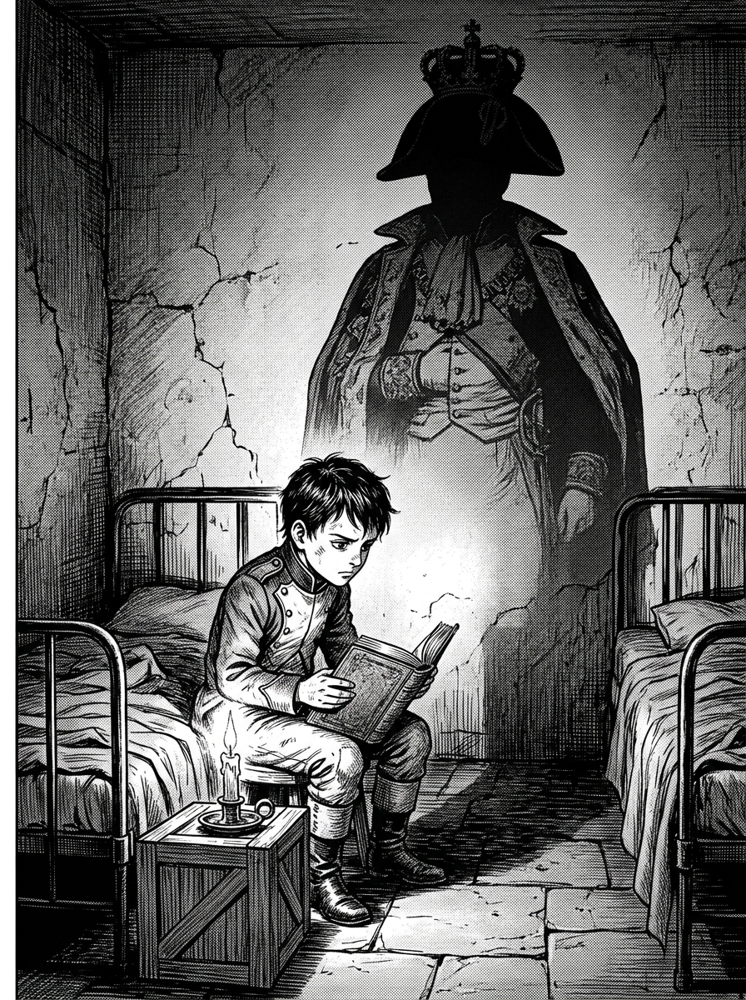
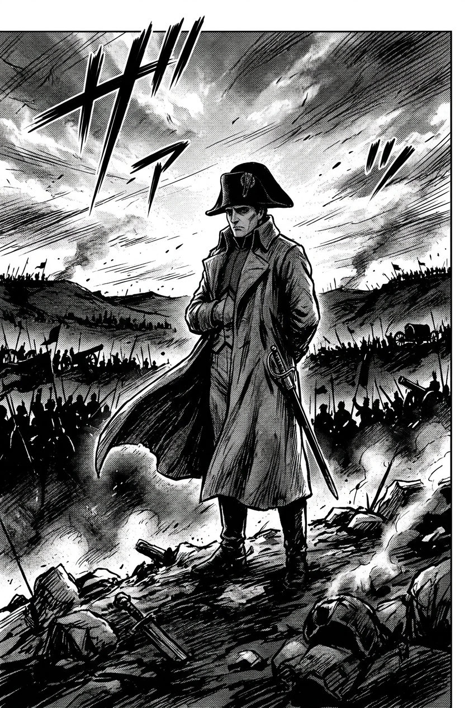
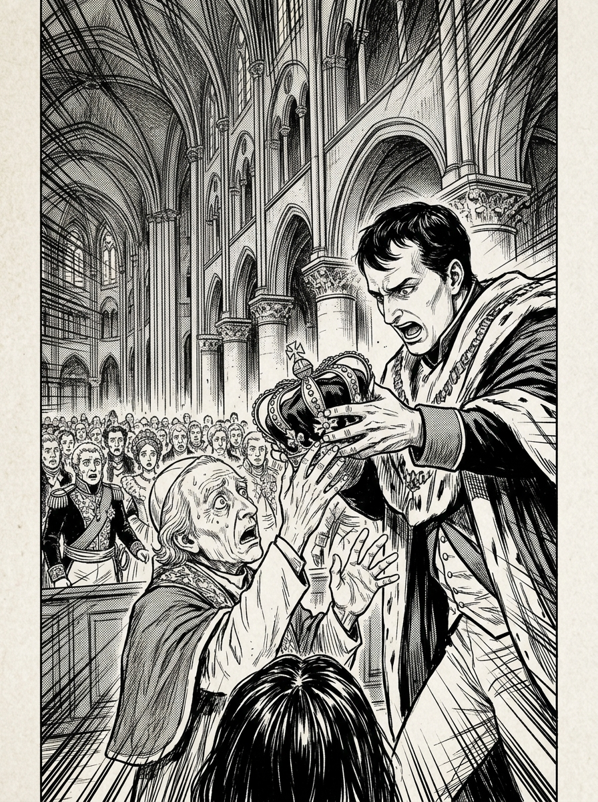
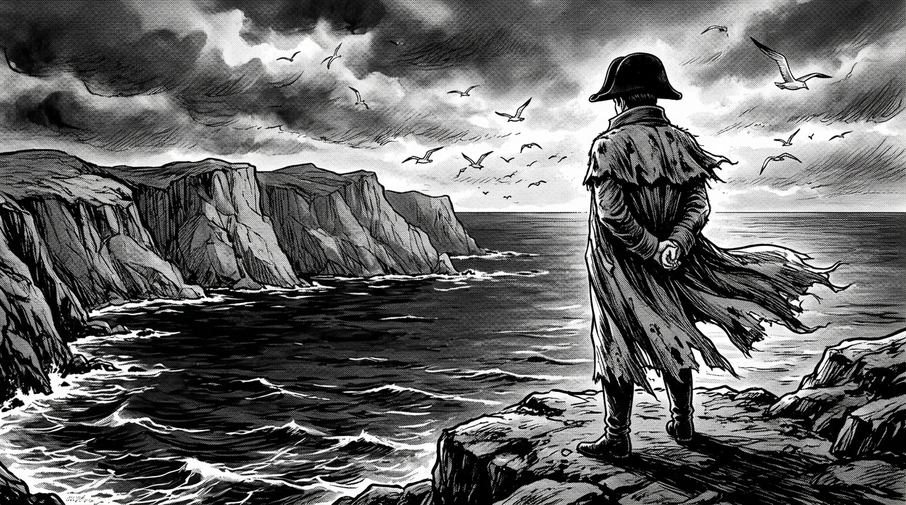

Chapter 01
The Shadow on the Wall

They laugh at me
for being small...
But I have read every
book in this school.
Corsica, 1779. A boy of ten sits alone
in a cold dormitory in mainland France.
He does not play. He does not fight.
He reads.
Brienne Military Academy, France
Chapter 02
Every Road in Italy
Before setting foot in Italy, he ordered
every single book on its topography.
Every mountain pass. Every river crossing.
Every road through every valley.

I have already
fought this battle...
...a hundred times
in my mind.
At twenty-four, the youngest general in France.
His enemies had armies.
He had knowledge.
Chapter 03
No One Crowns Me But Myself

I did not come this far to let another man place the crown on my head.
Notre-Dame Cathedral, December 2, 1804.
The Pope had come to crown him Emperor.
Napoleon took the crown from his hands
and placed it on his own head.
The message was clear: he answered to no one.
Chapter 04
The Gamble Too Far
Every victory made him want more.
Spain. Austria. Then...
Russia.
600,000 men marched into Russia.
The largest army Europe had ever seen.
The Russians burned everything.
Then winter came.
Only 100,000 returned.

I have read
a thousand books...
But not the one that tells
a man when to stop.
A tiny island in the middle of the Atlantic.
2,000 kilometers from the nearest land.
He read. He wrote. He remembered.
He was a reader who became an emperor.
A general who built museums and wrote laws.
A man who walked the streets of Paris at night
drinking hot chocolate in disguise.
He took too many risks in the end.
But what an incredible mind.
What an incredible journey.
終
Napoleon Bonaparte — 1769–1821